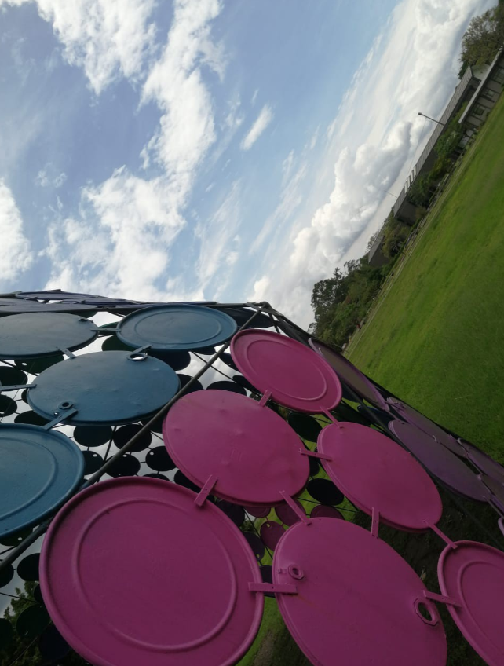
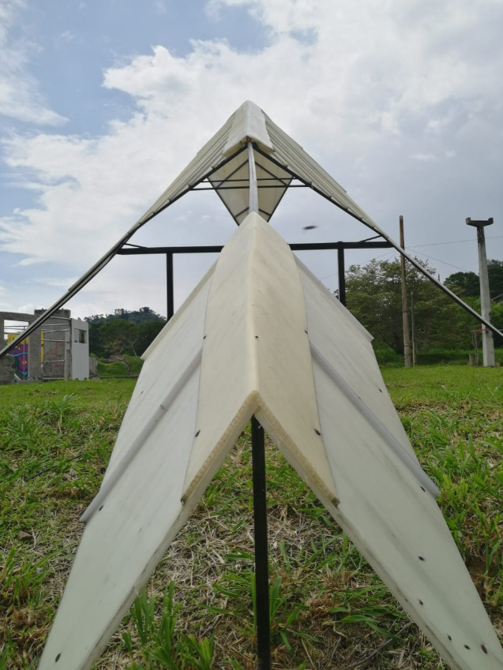

Desing elements
As a desing and web developer is important to handle the concepts of html and css but there is also a very important part wich is desing elements.
Study structures, color, composition will help you to create a better experience for your users.
In this image we can find the concep of direction, as the dome takes over the lower corners and the tip giving us a focal point at the center of the image.

In this second image we can find the concept of balance with the vertical and horizontal lines that are formed within the composition of the railing with the structure.
And in the last image, we can see the gravity where the object remains solid in the center of the image and we also see that being centered gives us proportion.